Pedra da Bela Vista
Pôr do sol a 1.250 m de altitude, rapel de 98 m e o maior balanço do Brasil.
Mirante
A capital paulista do turismo de aventura fica a poucos minutos da chácara. Reunimos 24 lugares para você aproveitar a região.
Voltar para a chácaraRafting, tirolesa, rapel, quadriciclo e mirantes de tirar o fôlego.
Pôr do sol a 1.250 m de altitude, rapel de 98 m e o maior balanço do Brasil.
Mirante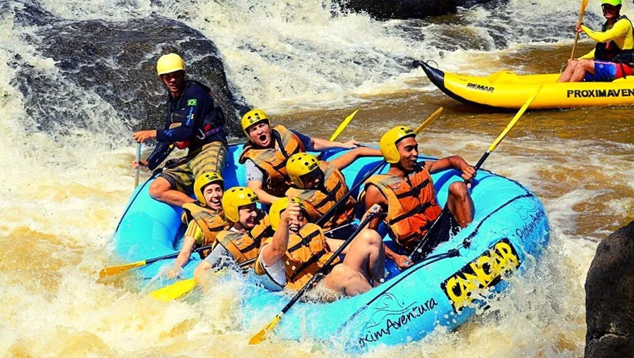
Rafting, caving, camping, trilhas e passeios ecológicos guiados.
Aventura
Parque pioneiro com rafting, tirolesa, caiaque, stand up paddle e quadriciclo.
Parque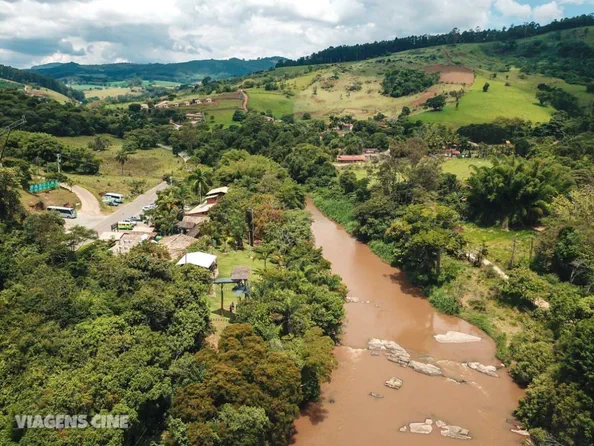
Rafting, arvorismo, escalada, tirolesa e quadriciclo no mesmo espaço.
Parque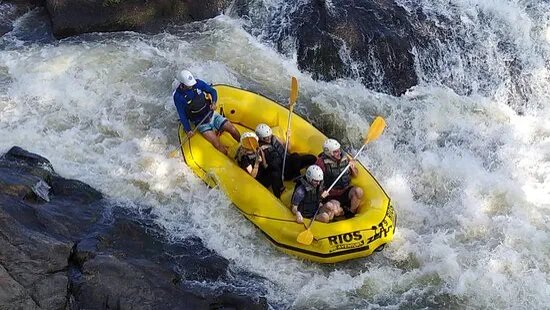
Operadora com rafting, quadriciclo, tirolesa e trilhas guiadas.
Aventura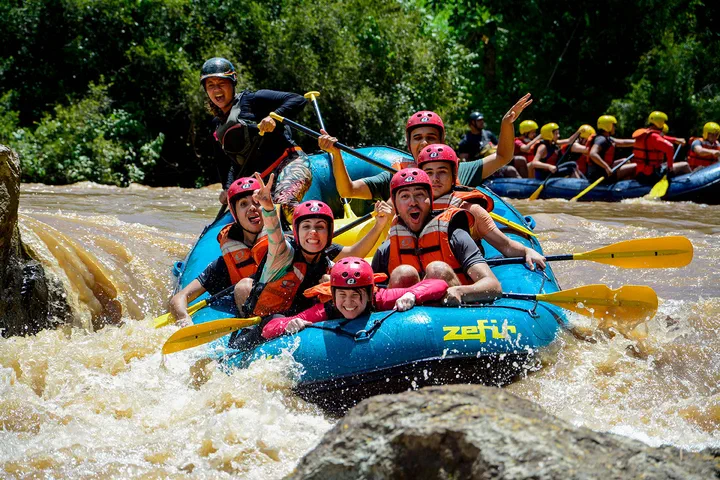
Rafting como atividade principal, com mais de 20 anos de estrada.
Rafting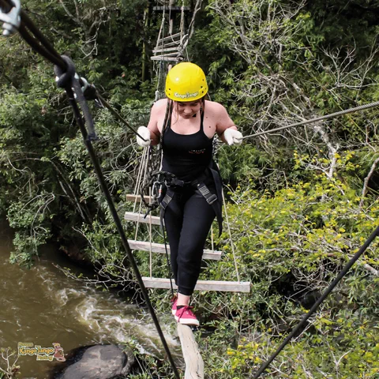
Parque com tirolesa, quadriciclo, arvorismo e arco e flecha.
Parque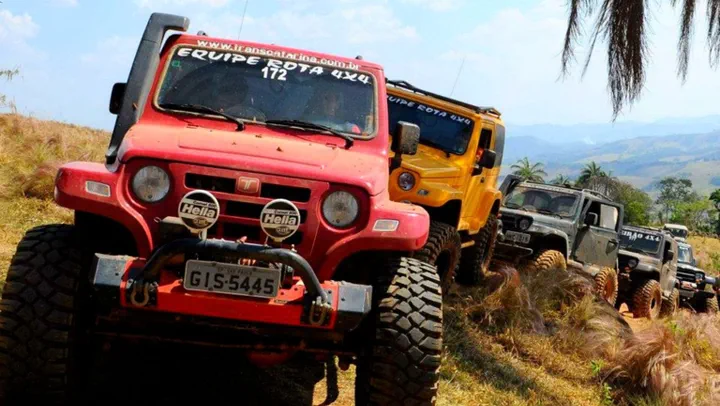
Centro de treinamento off-road com trilhas guiadas.
Off road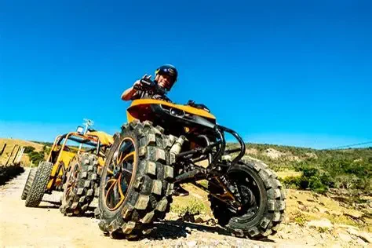
Passeios de quadriciclo, moto e off-road por trilhas e cachoeiras.
Off road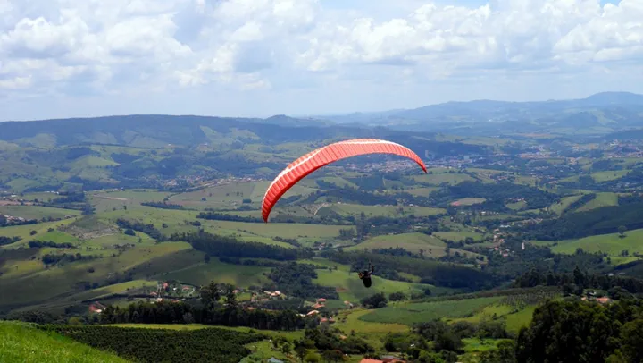
Mirante a 1.200 m de altitude, com voo livre de parapente e asa-delta.
Mirante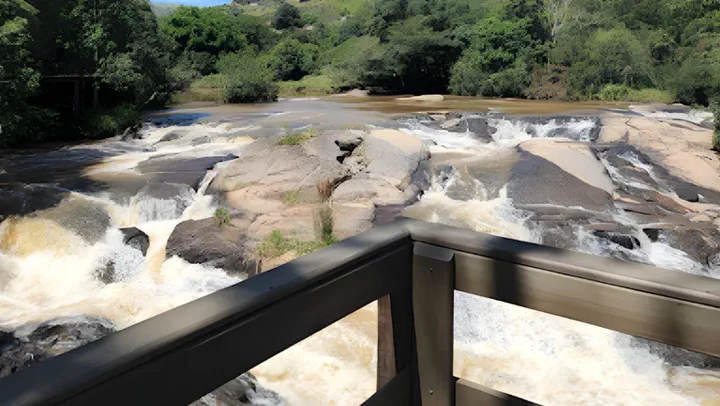
Deck sobre o Rio do Peixe para assistir à corredeira e ao rafting.
Passeio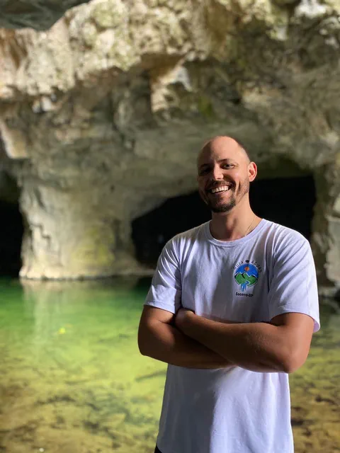
Informações sobre passeios em cachoeiras e pontos turísticos da região.
CachoeirasMirantes, museus, parques urbanos e o comércio típico da cidade.
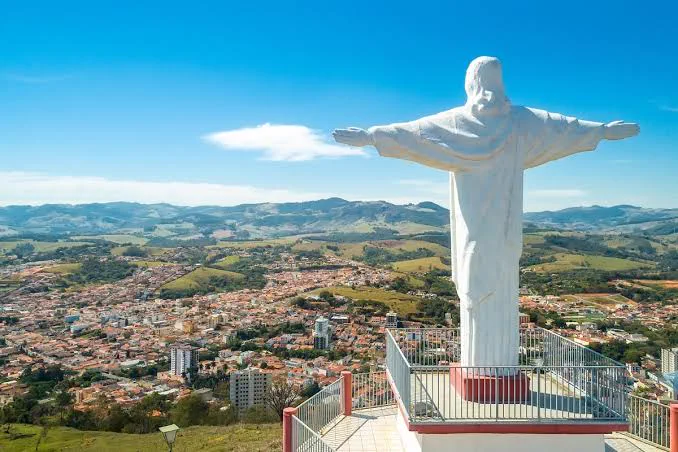
Empório com vista panorâmica da cidade inteira.
Mirante
Antiga mina com formação rochosa e pedalinhos no lago.
Passeio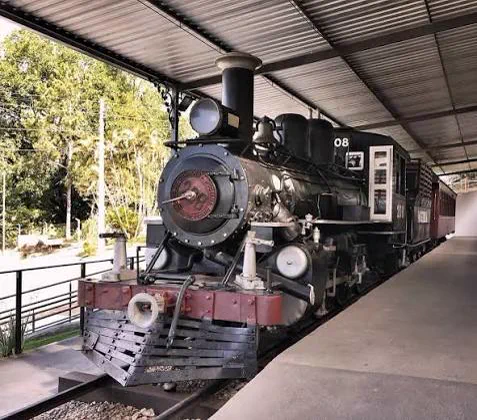
Locomotiva histórica exposta em uma mini estação.
História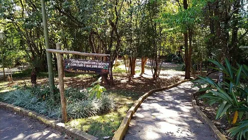
Parque urbano com trilhas e programas de educação ambiental.
Natureza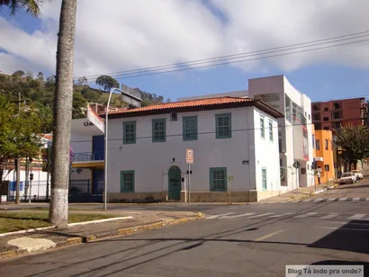
Acervo histórico da cidade e da Guerra Constitucionalista de 1932.
Museu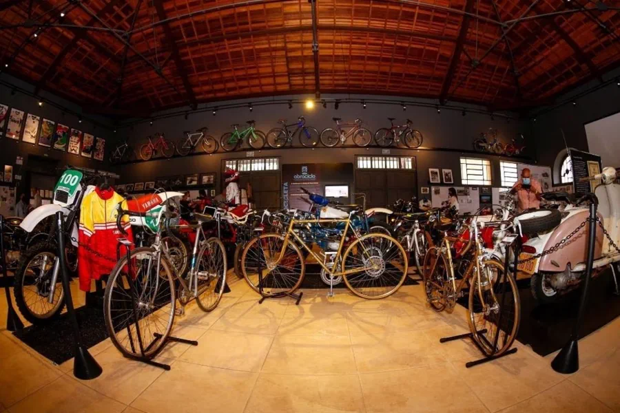
Relíquias históricas e encontros de motoclubes nos fins de semana.
Museu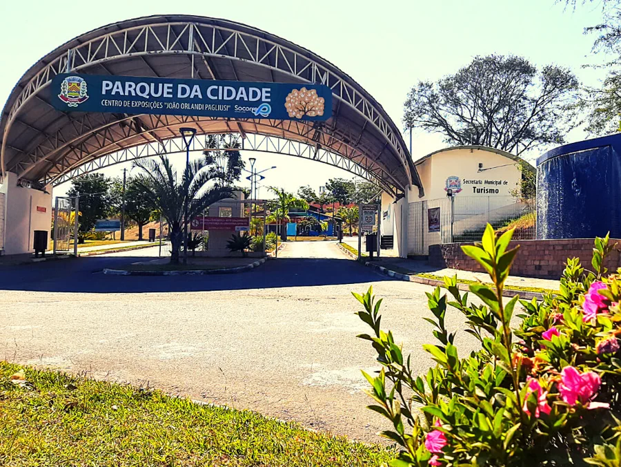
Espaço com trilha, parquinho e pista de skate.
Família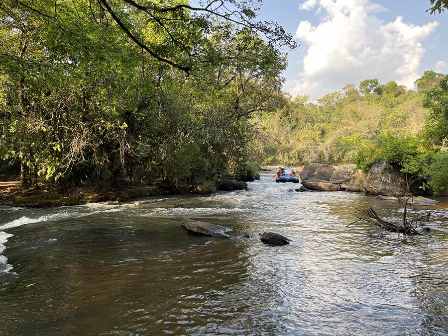
Trajetos cênicos do Serrote, Oratório, Rio do Peixe e Lavras.
Rota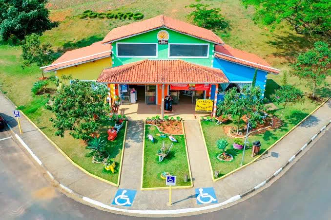
Peças exclusivas feitas por artesãos locais.
Compras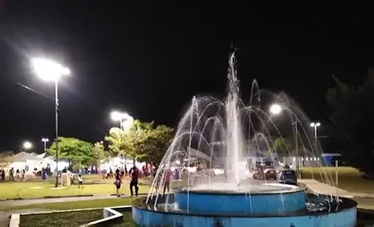
Eventos semanais espalhados pelas praças da cidade.
Feira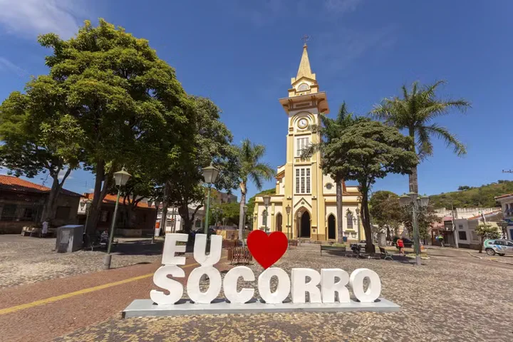
Festa da Marechal, Festa de Agosto, festivais e shows durante o ano.
Cultura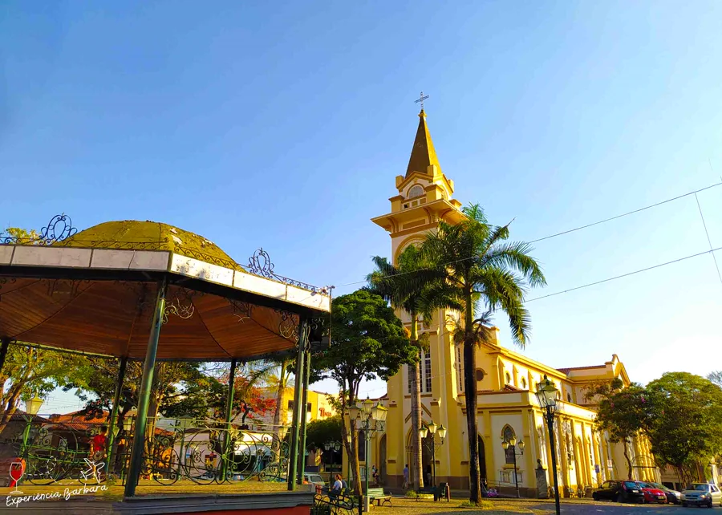
Centro tranquilo para caminhar, com cafés e comércio típico.
PasseioPiscina com vista para o vale, a poucos minutos de tudo isso.
Preencha e abrimos o WhatsApp com tudo pronto.